How to Install from the CD Repair Manual Using Tascal-T and
Upgrade the S2000 Program Card (Ver.T4.03)
"Work Overview"
Run the installation file contained in the CD repair manual, andInstallperform
• Decompresses the compressed files and saves them to the specified location on the hard disk
• Once installed, the files will not be deleted
even if the Tascal-T power is turned off
Connect S2000 and perform the program cardversion upgrade(rewriting) work
"Detailed Work Procedure"
[ⅰ] Installation Work
(1) Insert the CD repair manual into the Tascal-T
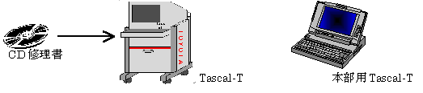
(2) Double-click the "My Computer" icon on the desktop
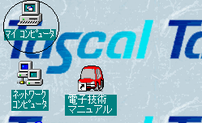
(3) The "My Computer" screen appears. Double-click the " E: " icon
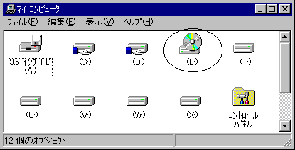
(4) The " E: " screen appears. Double-click the "Verup" icon
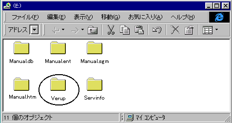
(5) The "E:\Verup" screen appears. Double-click the installation file icon
Installation file name → S20v403.exe
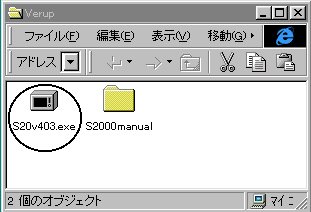
(6) The "S2000 Version Upgrade Ver.*.**" screen appears. Check that it shows "c:" and
click "OK"
(NOTICE: Never click the "Browse" button)
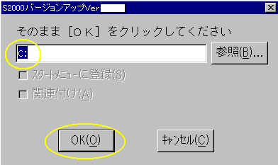
(7) Installation starts, and the screen closes automatically when it is completed
(8) Double-click the "My Computer" icon on the desktop
[NOTICE] If the "S2000 Related Work" shortcut icon already exists on the desktop,
steps (8) to (11) are not necessary
(9) The "My Computer" screen appears. Double-click the " C: " icon
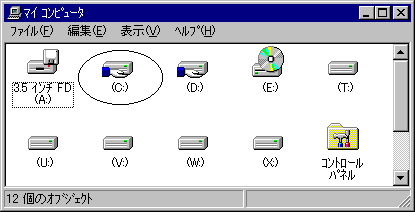
(10) The " C: " screen appears. Double-click the "S2000" icon
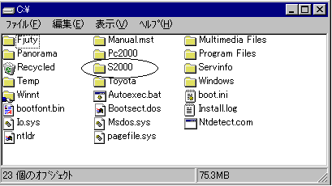
(11) The "S2000" screen appears. Move the "S2000 Related Work" shortcut
icon inside it onto the desktop
(Drag the icon and release it on the desktop)
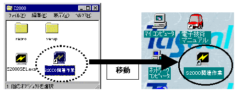
→ End of installation work
[ⅱ] Version Upgrade Work
(1) Connect the S2000 to the AC adapter
(2) Using the dedicated cable (the cable supplied with the Tascal-T, also used for PC2000), connect the Tascal-T
and S2000
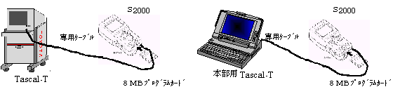
(3) Insert the 8M-byte program card into the S2000, and turn the S2000 power SW ON
(Label: blue, Part No.: 09991-60300)
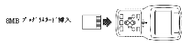
(4) Double-click the "S2000 Related Work" shortcut icon on the desktop
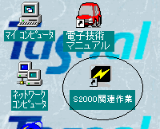
(5) The "S2000 Related Work" screen appears. Click "2.S2000 Card Version Upgrade"
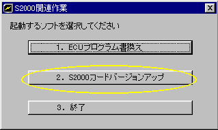
(6) The "S2000 Version Upgrade Program" screen appears. Click "Download"
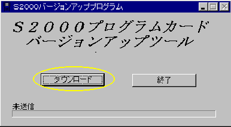
(7) The screen below appears. Check its contents carefully
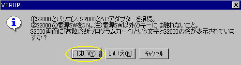
(8) If the S2000 screen is as shown below, click "Yes"
*If the screen below is not displayed, return to the previous screen with the [Back] key or turn the power SW OFF once
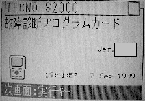
(9) The version upgrade starts, and the bar graph extends as it progresses
"Time Required"
If the previous version upgrade has not been performed (before starting: Ver.T4.00) → Approx. 39 minutes
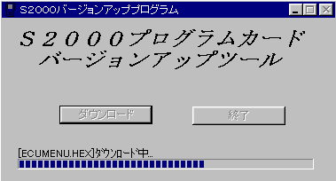
(10) When the version upgrade is completed, the S2000 buzzer sounds 3 times and the screen below is displayed
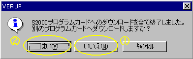
(1) To finish, click "No" → In this case, go to (11)
(2) To upgrade another program card, click "Yes"
→ In this case, after the screen below is displayed, click "OK" to return to (6)
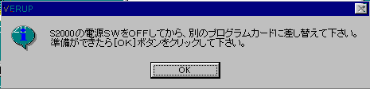
(11) The "S2000 Version Upgrade Program" screen returns. Click "Exit"
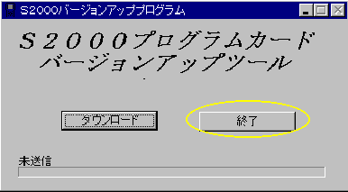
→ End of version upgrade work
[ⅲ] How to Confirm the Version Upgrade
If the version number on the initial screen displayed after turning on the S2000 power
「Ver.T4.03" is shown, the version upgrade is complete
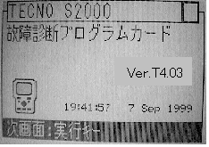